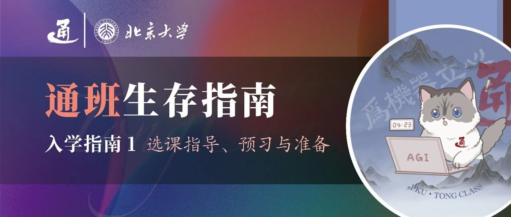

通班生存指南 | 入学指南（1）


请滑动翻阅来自通班的信～
本期概要
Part 1. 选课指导
大一入学，通班学生应该学习哪些课程呢？北京大学选课系统应当如何使用呢？在所谓“海淀大赌场”中应当如何选到心仪的课呢？我们收集了一些同学们常问的问题，帮助大家更好地了解选课相关信息，开启在通班的大一时光！
Part 2. 预习与准备
开学前的暑假应当如何安排呢？大一学习的专业课是否需要预习呢？入学前应当在学业上做哪些准备呢？关于这些问题，来听听学长学姐们怎么说～
01
COURSE SELECTION
选课指导

📝 大一上学期要学哪些课程？
根据学校要求，大一上学期同学们可以选修不超过25学分的课程。那么，我们应当如何规划自己第一学期的课程学习呢？
培养方案解读
根据培养方案，通班学生（及所有DAI方向学生）在大一上学期必修的专业课程为：
课程名 | 学分数 |
高等数学A（一） | 5 |
线性代数A（I） | 4 |
计算概论A | 3 |
人工智能初级研讨班 | 1（通班必修） |
总计13学分。
与此同时，学校和元培学院要求同学们在大一上学期学习课程：
课程名 | 学分数 |
新生讨论课 | 1 |
军事理论 | 2 |
新生教育实践课程 | 1 |
形势与政策 | 1，不计入总学分 |
思想政治实践（上） | 1，不计入总学分 |
总计4学分。其中，新生讨论班详情请参照：https://mp.weixin.qq.com/s/NkcTIHo-FvvZxEpr0h7MaQ?poc_token=HCAcg2ijW3l9Pv_RMZ-7Hi6cG9b8-dwzC6y8_2ef
总结：按照培养方案选课，通班的新生应当学习13+4=17学分的必修课！
注：形势与政策、思想政治实践（上）不计入大一秋季学期25学分限制。思想政治实践（上）无需手动选课，届时年级辅导员会下发通知。
选课建议
按照标准选课方案，同学们还可以选择最高不超过8学分的课程！首先，需要说明的是，25学分是上限而不是建议或必须，同学们不用抱着必须要选满学分的心态来选课，否则可能入学后会面临很大压力。
以下是一些建议选择的课程，仅供参考：

思想道德与法治（3学分）
必修政治课，选元培学院开设的可以认识很多一起选课的年级同学，并获得只用做pre不用背书考试的至尊体验！（x）
英语课（2学分）
根据入学后的英语分级考试分为C+、C、B、A等级，选择自己对应等级的课程。
各个等级应修英语课总学分为：
A级8学分，B级6学分，C级4学分，C+级2学分。
A级应修4学分的A级课程+4学分的B级课程；
B级应修4学分的B级课程+2学分的C级课程；
C级应修4学分的C级课程，或2学分的C级课程+2学分的C+级课程；
C+级应修2学分的“批判性思维与学术写作（CTAW）”课程。
体育课（1学分）：注意大学四年要在四个不同的学期选择四门体育课！建议每学年选择一门，否则未选修体育课的学年需要额外体测。注意：在4个学分之中，男生必修1学分太极拳，女生必修1学分健美操。
通识课（2或3学分）：按照元培学院的要求，本科期间需修满12学分通识教育课程，其中1学分是大一上学期必修的新生讨论课。其余11学分中，通班学生作为理工科类，需至少在第I/II类通识课里选修一门，在第III/IV类通识课里选修一门。
……
⚠️
入学后新生教育期间会有选课指导会，请同学们积极参加，获得专业的指导意见！
📝 如何使用选课系统
本部分相关网站网址
下列常用网站可在关注本公众号（PKU通班）后，直接在公众号聊天界面发送「常用链接」得到可跳转的超链接（持续更新）～
选课系统*：elective.pku.edu.cn
树洞*：treehole.pku.edu.cn
北京大学教务部：dean.pku.edu.cn
非官方课程测评：courses.pinzhixiaoyuan.com
选课投点计算器（功能正在完善中）：roll.guide2tong.top
*：需要使用北京大学门户账号登录后才可以使用
选课流程
进选课网，看选课流程，注意时间节点。

上图为往年时间线，仅供参考，具体请查阅本年度选课时间安排。
1、预选：浏览/搜索感兴趣的课程，将其加入“选课计划”。

2、抽签：选课系统将会按照你对于课程的意愿值进行抽签。
根据四项指标计算优先级的公式为：A=T*M*P+N
其中A为最后得出的优先级；
T为教师是否接受或拒绝，接受为100，拒绝为0，不表态为1；
M为课程类别，其中院系推荐课程为100，非院系推荐课则为1；
P为个人意愿点0至99（由学生自主确定）；N为年级，毕业班为0.5，其余为0。
3、候补抽签：选课系统会用每门课程的剩余名额在参与候补抽签的同学们中再抽一次签。（聪明如你想必能猜到，下图对应的是限选/已选上/候补 人数）

4、先到先得：在这一阶段开始的时候，只要是有剩余名额的课程，都可以通过填写验证码进行直接选课。
这一阶段的特点是可以随时选课和随时退课。剩余名额产生的原因分为三方面：
这门课在抽签阶段并没有选满；
老师向教务申请扩充名额；
有人退课，名额在24小时内随机放出。
⚠️
请诚信刷新选课，不要使用GitHub等平台上的脚本等打破公平竞争的科技手段刷课！利用科技手段高频率的刷新会被网站识别处理，违者将受到学校严厉处分！

5、跨院系选课：在上述选课过程中，每个人都只能选择自己院系培养方案内的课程，而不能选择其他院系的专业课等。但元培学院学生可以自由选择全校所有院系的课程，故本阶段与各位无关！
6、补选：这一阶段只能够进行课程的补选，而不能退课。因此，课表应该尽量在补选之前就确定下来。
选课策略
课程选择
一个好的想法：选人多的老师
好处：选的人多的老师一般来说就是最好的老师。
坏处：选的人太多了，很大可能性会掉课。
一个另类的想法：按照实际效用选课
风险偏好型：喜欢收益的波动性胜于稳定性，可以选择人最多的老师。
风险厌恶型：喜欢收益的稳定性胜于波动性，可以选择人次多/第三多的老师等等。
⚠️
重要：学会看课程测评
以下为获取课程测评信息的几种常见方式
通班专业课
可登录网站查看通班内部课程测评！（具体使用请等待入学后获得使用方法）
非官方课程测评
教学评估
树洞测评
搜索课程+老师名，如张牧涵老师的机器学习就搜索“机器学习 zmh”等（开学前和期末后多搜一搜测评洞能获取很多有用的课程信息）
元培学会手册
投意愿点

普通方法：老老实实看自己意愿来投
玄学方法：
质数投点法（传闻中将课程意愿点设为质数有更大概率选中课🤫）
傻瓜方法：选课投点计算器（功能正在完善中）
（https://roll.guide2tong.top/）
补充：有些课看起来很多人都在选，但是很可能不少人只是投了几个意愿点碰碰运气；有些课看起来选课人数还没超出限额多少，但是大家都怕掉课因此扔进去了很多点求稳。而这，就是海淀大赌场的魅力！具体的情况嘛，这个需要你自己衡量（x）（需要你在燕园多生活一段时间，积累相关的经验，在统计意义上掌握北大学生的心态。）
其他注意事项
当你在查找课的时候，试试用“全部”来搜索。
当你在预选界面找不到你刚刚添加的课的时候，试试“翻页”。
当一门课有高级的替代课的时候，记得合理评估一下自己的水平。（例如：数学分析和高等代数分别可以替代高等数学A和线性代数A，但除了对数学特别感兴趣、未来打算做与数学强相关的AI基础理论研究的同学，不建议其他同学盲目选择。）
掉课不要慌，总有学可以上的。
多和通班的学长学姐交流，看看应该选哪些课、哪些老师。
每学期不宜选很多课，20-25分即可。
注：根据教务部规定，“个别学有余力的学生（GPA > 3.7）经本人申请、院系批准、教务部审核后，可适当超过25学分的上限，但一般不超过30学分”。具体细则可查看教务部网站。
📝 未来的选课如何规划？
培养方案是定死的（也并非完全不变，可能会开新选修课或遇到课程改革），而选课方案是灵活的。
在大一结束后，你就会进入没有人指导选课、大家“自由”发展的旷野。但是，这么遥远的事情为什么刚入学就要考虑呢？因为这可能关系到你是否要做出中期退课的决定（尽管同学们不会相信自己有这个需要，但是赶上发挥失常/没空学这门课的时候，这就是你最后的自救机会）。中期退课（特指必修课，其他课问题不大）会影响你未来学期的课程安排，这就需要一点点的整体规划意识。
在入学的第一个学期，必修课和专业选修课方面没有什么自由发挥的余地，因此大家只是展望一下未来的课程体系、每个学期的课内压力大小，留个印象就足够了。至于后续课程选择的安排，敬请期待即将推送的有关课程安排与课表设计的指导！
02
PREVIEW & PREPARATION
预习与准备
📝 关于预习和准备工作
对于大一上学期的专业课，是否需要提前预习呢？对于人工智能专业的学习和科研，需要在暑假和大一上学期做哪些准备工作呢？
首先，需要明确的一点是：通班是面向高考招生的，默认新生入学时都是零基础的萌新！因此，所有培养方案的设计、课程的设置都是默认面向零基础的同学的，故完全不用担心没有编程/AI相关基础会落后于同学，大家都是站在同一起跑线上！
至于开学前的暑假里是否需要提前预习或者做一些有关课程的准备工作，可以说“仁者见仁，智者见智”，来听听学长学姐们怎么说吧：
（上下滑动查看）
陈应涵：
个人认为暑假还是可以以放松休息为主，根据自己实际情况提前准备和了解为辅，因为开学后的课程和培养都是从零开始的，因此不会出现不预习就跟不上的情况。AI入门方面，可以阅读一些科普读物，如朱松纯院长主编的《立心之约：中学生AI微课十讲》，可以初步了解一些人工智能的前沿领域，包含了计算机视觉、自然语言处理、认知推理、机器学习、机器人和多智能体等进入通班后可以投身的板块和领域。此外，可以参考后续即将陆续推送的《编程自学指南》《AI入门准备》等进行计算机编程和科研入门方面的准备。
个人建议编程自学可以优先自学一些python相关内容，因为大一上学期的计算机专业课计算概论A是不讲python而只讲C的，而后续专业课（如大一下学期的AI引论等）和后续科研工作会要求同学们掌握python作为工具，因此需要一些自学。
至于大一上学期的专业课，个人认为预习的必要性是线代略大于高数大于计概（根据开学后上课的感觉和高中学习的gap、难度等），当然仁者见仁智者见智～ 个人认为报道前不预习课本也是完全ok的，因为报道到开学还有大半个月时间，整体都比较清闲，自由时间较多。
杨天琢：
高考后的暑假当然要好好玩啦！毕竟这可能是大家人生中最后一个轻松的暑假啦……
当然，从个人的角度出发，我作为没有竞赛/大量编程训练背景的选手，确实推荐大家在暑假中对一些专业课做一些准备。大家入学就会面对北京大学信科方向史诗级的3A大作，个人认为，计算概论A是最适合在暑假中提前熟悉手感的，包括但不限于学习cpp的基本语法，熟悉IDE，看一些最简单最基础的搜索和算法。
熟悉cpp的基本语法是一个time-consuming和energy-consuming的事情，所以还是推荐以前没写过cpp的学弟学妹们提前准备。笔者在暑假里并没有做任何数学方面的预习，现在想来，还是应当在暑假中看完期中考试的部分（一般高数考到积分，线代考到3.4左右），
大一上的上半学期作为大学的适应期，会有一段时间的注意力恢复期，可能难以进行大量而系统的学习，因此还是推荐大家至少先熟悉一遍期中考试范围的书本和例题，保持自己休息的大脑略微activated，这样就能避免拿到树洞的满屏红色。
方思童：
个人觉得比起知识层面的大批量预习，更重要的是在暑假尽快熟悉csai的“工作方式”。包括但不限于科学上网、命令行、Git&Github、remote-ssh、AI编程(如Claudecode, Cursor, windsurf等)，以及如何使用notion等工具进行项目管理。
非常鼓励大家在课业安全无虞的前提下及早接触科研，通班本科生进组实习几乎无门槛，发邮件或线下reach out即可。可以提前熟悉Pytorch，WandB，huggingface等的使用，之后在科研实践里自然地“做中学”。在自己感兴趣的领域尚未确定时，很建议大量阅读相关论文、找对应导师聊天，甚至可以花一定的时间在不同组轮转。兴趣是科研的第一驱动力。
课业方面，在大一学年的基础课取得好绩点的核心是“找对路径”+“刷高熟练度”，每门课最省时省力的路径都不尽相同，且因人而异，比如“面向往年题”还是“面向slides”，亦或是“吃透老师上课推导的核心知识点“。建议善用搜索，结合前人经验和自身体验，总结出最佳路径。面对考试时，则需要针对考试本身做熟练度的巩固加强。
另外，通班培养方案在选课次序上有较大的调整空间，大家可以视自身情况改变专业必修的选课顺序，以及选修有利于自身发展方向的选修课。十分推荐参考csdiy进行辅助学习或自主学习。
倪嘉怡：
如果暑假闲着特别有时间和兴趣的话，The Missing Semester of Your CS Education是重要且不会教的，很详细手把手教学Shell、Vim、Git、命令行、debugging，但主要是留下个印象，之后用到了会更深入理解掌握。
CS61A: Structure and Interpretation of Computer Programs是可以让人充分感受到编程趣味性的良心好课，之后被更难的课虐的时候能始终提醒自己享受编程的初心。
如果有点难可以从CS 10: The Beauty and Joy of Computing入手，是为高中生开的课，零基础友好！csdiy列出各进阶课也都很好玩。
实用主义的话可以刷数学课和计概的题，避免学期内没时间刷，绩点掉下之后打击未来学习信心（大一期中后请一定不要被绩点影响学习热情！）。btw，个人作为自学的狂热爱好者，完整学习过Berkeley、Stanford、MIT二十余门课程，在各种感兴趣的领域都可以找到框架设计好、作业/lab/project代码质量高、考核方式科学、教学教团队耐心负责的良心好课，如果有需求欢迎戳我做人肉测评机~
李嘉豪：
从实用的角度来说，因为高数、线代、计概是对大一上绩点影响最大的几门课，可以预习它们。针对绩点改革的政策来看，在其他课划为等级制或合格制且每个人每学期可以自选pf一门课的前提下，这几门会保持百分制且不能自选pf的考试结课的大学分专业基础课是对大一时期的成绩单非常重要的。那么如果要深入学习这几门课并取得较高的成绩，我个人发现的规律是熟能生巧，在掌握核心知识的基础上刷足量的习题是十分有益的。另外，python是ai科研中十分常用但课程较少涉及的编程语言，也很推荐在暑假进行预习，并熟悉一些cs工作流，这方面前人之述备矣。另外，心态的准备也是非常关键的，如何适应一个多元评价的新环境也是值得探索的。
本部分相关网站网址
csdiy：csdiy.wiki
The Missing Semester of Your CS Education:
missing.csail.mit.edu
CS61A: Structure and Interpretation of Computer Programs: cs61a.org
CS 10: The Beauty and Joy of Computing: cs10.org
预习建议和相关材料
高等数学A（一）
可以说高数是与高中数学知识联系最最紧密的课程。在高等数学A课程中，我们将从实数的完备性、极限的定义等基础出发，一步一步研究清楚高中常用到的导数、积分、中值定理、洛必达法则、泰勒展开等高等工具的严格定义和原理。
高数A使用的教材是《高等数学（第三版）》（李忠、周建莹编著，北京大学出版社），课程的作业题都来自这本教材。参考教材是《数学分析》（伍胜健编著，北京大学出版社）数分教材对定理的证明更加详细，逻辑更严谨，书后题的难度也更大，可供拓展阅读和练习。

笔者建议想在暑假自学的同学：在进度上至少要看到“积分”那部分，熟悉各种积分方法；在效果上要熟悉极限部分的ε-N语言和ε-δ语言，能在大量的全称量词和存在量词中能明白其具体含义而不被绕晕。具体的练习不必着急，开学之后的作业、习题课都会有相应的布置和安排。
作为一门数院开设的公共数学课，高数A的期中期末考试难度忽高忽低，有时简单到大家基本都能考90分以上，而有时会难到直接考察数学分析的往年题，千万不要完全依赖往年题进行复习，学明白知识和原理是最重要的！
高等数学A的上位课程是数学分析，下位课程是高等数学B，其中高数B与高数A的授课内容几乎完全一致，学习资料也很有参考意义（如xyt的讲义几乎是人手必备的:darkoxie.github.io）。
线性代数A（I）
相较于DAI的其他方向，通班的培养方案的一大特点是只需要必修线性代数（上），这门课程的内容涵盖线性方程组，行列式，线性空间，基本的矩阵和二次型相关知识。学习内容和学习方法与高中数学有很大的差别，也是每一位同学必须经历的难关。线代A使用的教材是《高等代数（第二版）》（丘维声著，清华大学出版社），因其体量庞大，被同学们常称作“丘砖”（也许那个更厚的配套的习题指导书才是“丘砖”hhh），建议找到学长学姐索要一份电子版的教材，或善用Z-library。
暑假的时间不可能把线代的所有知识全部学明白，丘砖的前三章更加偏重技术细节，想必大家在开学时都会足够重视。笔者建议想要在暑假投入精力预习的同学可以多多关注“向量组/矩阵的秩”或者“线性空间的维数”的概念，笔者认为这是线性代数/高等代数中最核心的部分，也是高中生最难消化的部分，更是沟通起诸多抽象且复杂的概念的桥梁。“过了黄洋界，险处不须看”，理解好上述概念便突破了瓶颈，可以对“线性空间的结构”这一核心问题有了奠基性的理解，此后的学习也会更加易于上手。
线代成绩中平时分（作业）占比较大，试卷的题目也多数源于丘砖。只需将丘砖上多次被引用和参考的重要例题烂熟于心，基本就能取得理想的成绩。线性代数A的上位课程是高等代数，下位课程是线性代数B，三门课程在大一上学期涉及到的知识点基本一致，复习资料也可以相互参考。

补充：
身边一些同学（来自各个理工类专业）曾反映过学了贵校的线代，并没有达到很深的理解，也不太会运用，而刻苦刷题掌握的“技巧”过了一个学期就忘掉了，似乎除了一个很高/很低/不高不低的绩点什么都没有留下。
线代A的一大特点是对于“证明”的要求很高，这一点有些偏离了“线代”这门课的目标，而像极了高代（是否需要在线代A做如此要求见仁见智）。本人（这条补充的笔者）大一上是赵玉凤老师班的，老师很受欢迎，讲课清楚，逻辑严密；但是，总觉得老师“现在推出了这个定理，我们下面证明那个定理”和”为了证明这个定理，我们需要证明这些引理“的讲课逻辑，更适合对线代有形象理解之后，需要在脑海里建立严密的数学体系的同学。而”理解“线性代数的这个任务也许贵校的线代课就难堪重任了（或许碰上一个好助教可以使这个问题得到部分解决）。悲伤的是，老师的思路也是可以溯源到丘砖的，丘砖更是引理套引理、看证明和做题需要痛苦来回翻书的一个更像工具书的”课本“（题外话：也因此不建议完全依赖电子版，翻页跨度动辄上百，即使能跳转过去也跳转不回来，还是要苦哈哈地翻回原处，手感很差）。
因此，个人建议暑期预习入门线代的时候找一些更”浅显“、更生动、更有利于建立直观的资料。Gilbert Strang 的课本 Introduction to Linear Algebra 也许会对你有帮助（老师的录课在b站就有，可以配套食用。据说这也是隔壁某些线代课的课本）。建立直观之后再听线代A，或许你能获得上来就听线代A的我体会不到的感悟。
计算概论A
这是所有DAI方向的同学大一上的必修课，从零开始讲解C++语言的编程(基本在C语言的范围内，面向对象等留待大一下的程设/软设来讲授)，笔者建议高中时没有编程基础的同学了解基本的代码框架，分支语句、循环语句、数组、指针等等部分。计概A的前半部分属于“语法”，基本没有思维上的难度，学完就能学会。期中后讲解函数、递归等问题就会很有难度，在平时的学习就要做到多多思考，即使使用大模型等工具帮助自己做出题目，也要仔细思考一遍代码的逻辑，自己如何能够想到这样做。毕竟写代码也是一种“熟练工种”，多多训练，熟能生巧。预习可使用课程指定教材吴文虎《程序设计基础》和入门参考书谭浩强《C++程序设计》。

补充：
计概的预习优先度在笔者看来是3A里最低的，因为前半学期的语法跟紧老师的进度且平时积极做好作业题就能学会，不是很有必要把知识性的东西重复学习；而想要预习后半学期的算法，你就不得不先学会C的基本语法，然后再找教程、刷题，只是为了期末的那一两道最难的题的话也不太值当（后面的数算课还会再学算法，并不是说没有在计概A把动归理解透，动归就成为你永远的短板了）。而功利地讲，计概只有3学分，对你的总绩点影响较小（相比5学分的高数上和4学分的线代上）；且计概给分不错，正常学习不太会出现高数线代的极低分，因此个人认为不需要对此太过焦虑。
本部分相关网站网址
Introduction to Linear Algebra:
www.bilibili.com/video/BV1at411d79w/
xyt讲义: darkoxie.github.io
Z-Library: z-library.sk
总结
在入学指南的第一篇，我们为大家介绍了大一入学后选课和入学准备相关的问题，希望能给新同学们带来一些启发和帮助！在接下来的推送里，我们将为大家介绍其他入学前需要做的准备，例如如何选择电子产品、如何使用学校的网络服务等，敬请期待！最后，再次诚挚欢迎同学们加入北京大学通用人工智能实验班～
关于通班：
供稿 | 陈旭峥 陈应涵 方思童 黄勃翔 李嘉豪 倪嘉怡 牛煦 杨天琢
封面 | 严绍恒
编辑 | 陈应涵
排版 | 吕鸿坤